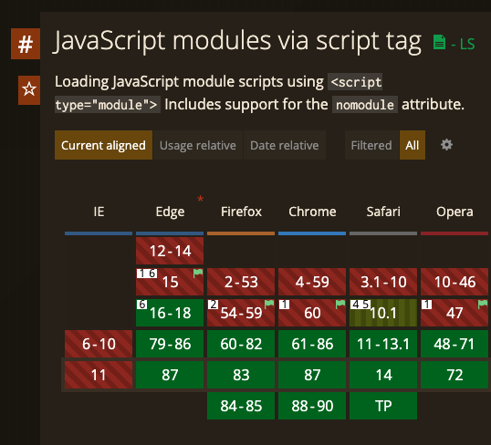
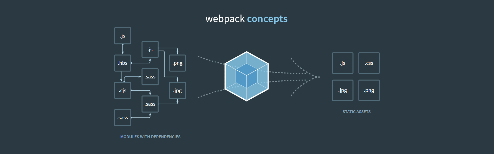
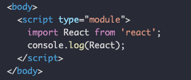
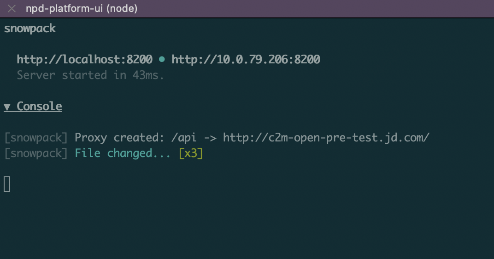

Snowpack
- 什么是snowpack
- 原理
- 怎么用
- 老项目如何整合
- 与vite区别
- snowpack-template-react-typescript
什么是snowpack
什么是snowpack
为什么要打包？🤔
为什么要打包？🤔
浏览器环境不支持ESM
http1限制，大量依赖文件请求
为什么要打包？🤔
-
浏览器环境不支持ESM

-
http1限制，大量依赖文件请求
HTTP 2.0💪
所以snowpack使我们能够只在需要打包的时候才进行打包
什么是snowpack
- 前端构建工具，如：Webpack、Parcel
- No bundle、快速开发、轻量
- 支持HMR - Hot Module Replacement
- 支持Typescript、JSX、CSS Modules
- 支持Plugin
- No bundle、快速开发、轻量
怎么做到的🤔
Webpack

所有js以及依赖都会打包成一个js文件
所有css以及依赖都会打包成一个css文件
每次文件修改后都会触发这个流程🤦♀️
Snowpack
-
No bundle: ESM
 -
文件一一对应
node_modules/react/**/* -> http://localhost:3000/web_modules/react.js node_modules/react-dom/**/* -> http://localhost:3000/web_modules/react-dom.js -
按需编译
-
代码编译基于esbuild速度超快，且只需要编译一次
-
由于不需要打包，且只需要一次编译，所以可以进行cache
-
每次文件修改后，只需要重新编译对应的文件

好处
- 快速
- 项目大小不影响启动和编译速度
- 缓存
怎么用
安装
# using npm
npm install --save-dev snowpack
# using yarn
yarn add --dev snowpack
创建全新项目
使用Create Snowpack App (CSA)
# using npm
npx create-snowpack-app new-dir --template [SELECT FROM BELOW] [--use-yarn]
# using yarn
yarn create snowpack-app new-dir --template [SELECT FROM BELOW] [--use-yarn]
启动
npx snowpack dev

启动流程
扫描项目使用的npm依赖
将node_modules下安装的依赖独立打包成一个js文件，如/node_modules/react -> /web_modules/react.js
启动Snowpack Dev Server，直接加载esm
由于npm依赖基本不会变化，所以Snowpack会将编译结果进行cache
老项目如何整合🤔
使用ESM语法（import & export）
npm依赖会自动使用es module版本，
如果依赖没有esm包，Snowpack会自动转换
CSS
Snowpack会自动将css加载到页面，同时也支持sass和less
import './style.css';
import './style.scss';
import './style.less';
CSS Modules
需要安装对应plugin，如：@snowpack/plugin-sass、snowpack-plugin-less-y
import styles from './style.module.css';
import styles from './style.module.scss';
import styles from './style.module.less';
Image
showpack.config.ts
别名 alias
环境变量
可以创建'.env'文件，配合plugin-dotenv
环境变量需要以SNOWPACK_PUBLIC_开头
Dev Server
namedExports
HMR（Hot Module Replacement）
Snowpack开发了基于ESM的ESM-HMR，支持标准HMR API
问题
-
nornj
升级最新版，加入esm打包
-
@scf/ui（1.24.2）
使用webpack别名处理
与vite区别
Vite灵感来自于Snowpack V1
Vite的ESM HMR先于Snowpack发布；当时Snowpack V1是不支持HMR的；Vite和Snowpack的HMR API会有细微差别
生产环境打包，Vite使用内建Rollup配置实现，而Snowpack需要借助plugin使用外部打包工具实现
Vite对Vue的支持会更好
Snowpack更加成熟完善，支持react， vue， preact， svelte；Vite还处于测试版